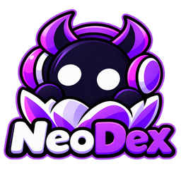
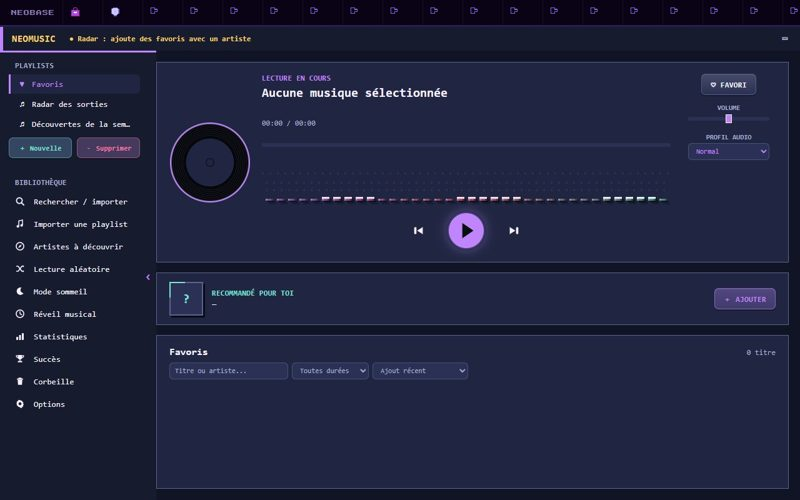
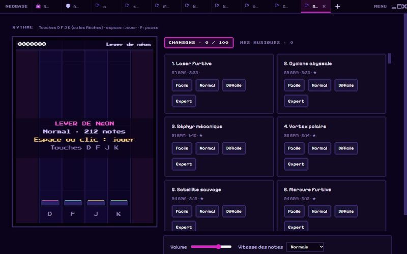
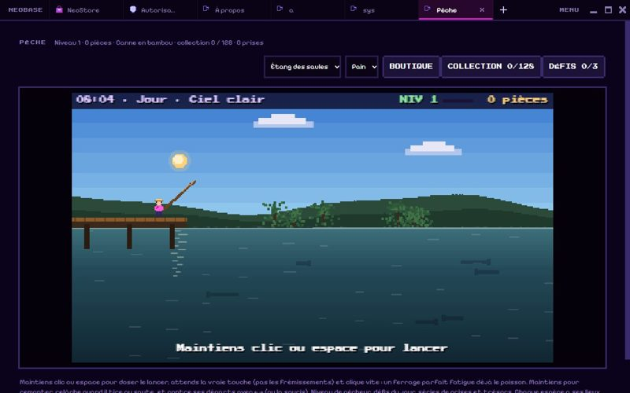
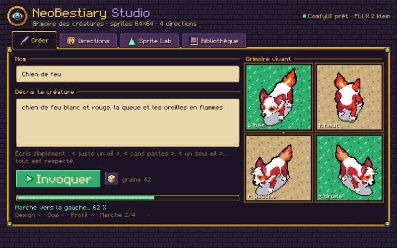
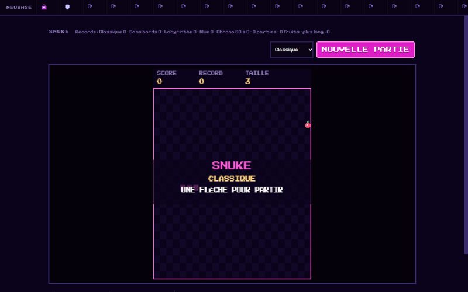
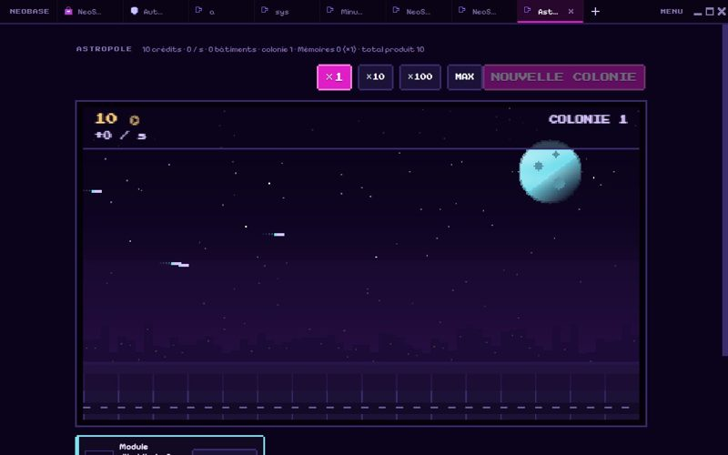
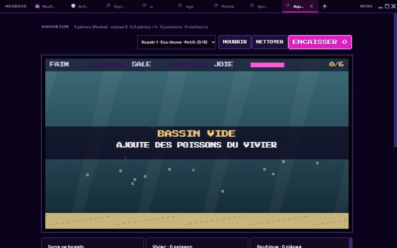
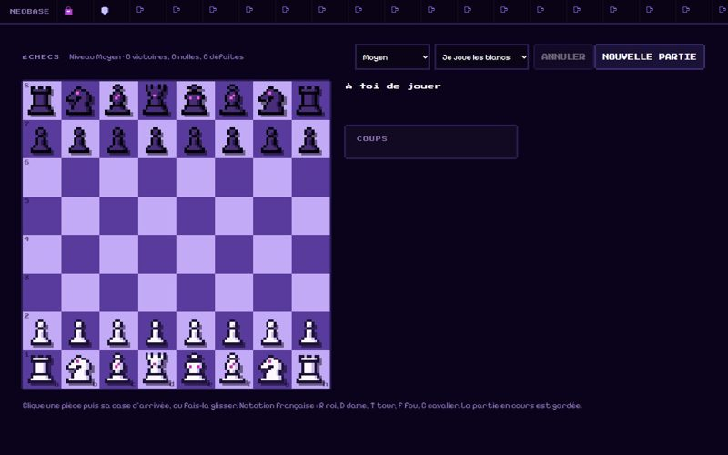

Un accueil vivant
Des décors animés (nuit étoilée, automne, Fuji, espace…), des tuiles pour tes sites, des widgets et ton agenda.

Ta page d'accueil, ton navigateur et tes applis.
Tout en pixel art.
Gratuit · Windows 10 et 11 · mises à jour automatiques
NeoDex remplace ta page d'accueil, ton navigateur et une pile de petites applis par une seule fenêtre, dessinée pixel par pixel.
Des décors animés (nuit étoilée, automne, Fuji, espace…), des tuiles pour tes sites, des widgets et ton agenda.
Des onglets, l'écran partagé pour regarder deux pages côte à côte, et les extensions Chrome qui marchent.
Les publicités disparaissent, YouTube compris, et un VPN s'allume en un clic.
Tes mots de passe restent chiffrés sur ton PC et se remplissent tout seuls.
Tes tuiles, réglages et données suivent sur tous tes PC grâce à OneDrive, Google Drive ou Dropbox. Des sauvegardes sont faites pour toi.
L'appli Android retrouve tes raccourcis et ta musique synchronisés.
Une boutique dessinée à la main, avec plus de 100 applis et jeux à installer en un clic.








Chaque appli de NeoStore est vérifiée et signée avant d'arriver chez toi. Une archive modifiée est refusée.
Chaque appli dit ce qu'elle peut faire, en une phrase simple. Tu peux tout revoir dans « Autorisations ».
NeoDex et ses applis se mettent à jour d'eux-mêmes, en un clic.
Télécharge NeoDex-Setup.exe depuis la dernière version.
Lance-le. Si Windows affiche un avertissement, clique sur « Informations complémentaires », puis « Exécuter quand même ».
Choisis un décor, ajoute tes sites, et va faire un tour dans NeoStore.